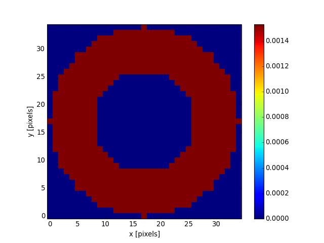

Ring2DKernel¶
-
class
astropy.convolution.Ring2DKernel(radius_in, width, **kwargs)[source] [edit on github]¶ Bases:
astropy.convolution.Kernel2D2D Ring filter kernel.
The Ring filter kernel is the difference between two Tophat kernels of different width. This kernel is useful for, e.g., background estimation.
Parameters: radius_in : number
Inner radius of the ring kernel.
width : number
Width of the ring kernel.
mode: str, optional
- One of the following discretization modes:
- ‘center’ (default)
Discretize model by taking the value at the center of the bin.
- ‘linear_interp’
Discretize model by performing a bilinear interpolation between the values at the corners of the bin.
- ‘oversample’
Discretize model by taking the average on an oversampled grid.
- ‘integrate’
Discretize model by integrating the model over the bin.
factor : number, optional
Factor of oversampling. Default factor = 10.
See also
Box2DKernel,Gaussian2DKernel,MexicanHat2DKernel,Tophat2DKernelExamples
Kernel response:
import matplotlib.pyplot as plt from astropy.convolution import Ring2DKernel ring_2D_kernel = Ring2DKernel(9, 8) plt.imshow(ring_2D_kernel, interpolation='none', origin='lower') plt.xlabel('x [pixels]') plt.ylabel('y [pixels]') plt.colorbar() plt.show()
(Source code, png, hires.png, pdf)

{kind=link}
{kind=link}